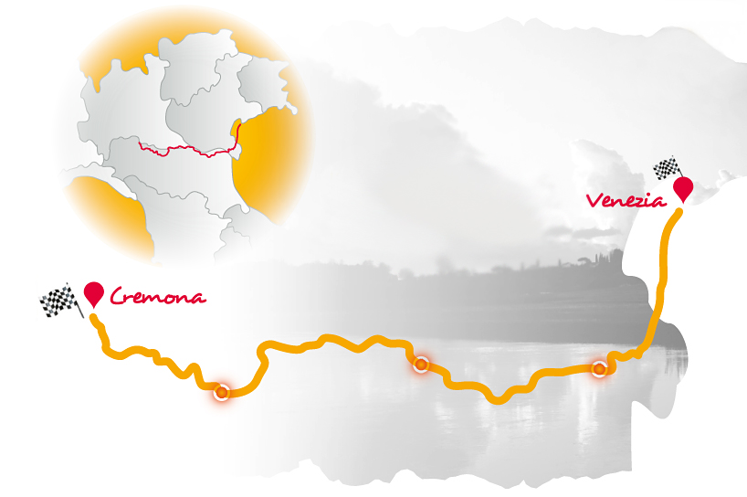
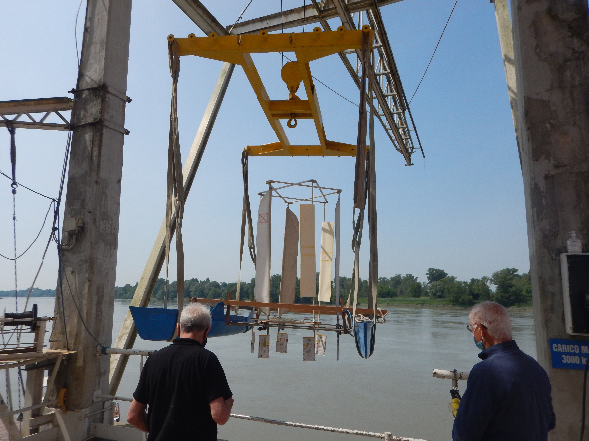
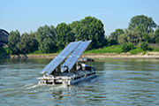
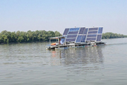
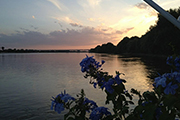
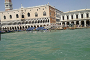

Sfida il grande fiume, alimentato solo dal Sole.
Equipaggi e mezzi sperimentali risalgono e discendono il Po tra Cremona e Venezia: una gara di endurance dove vincono strategia, ingegno ed energia pulita.
Tre modi per vivere la Padus Solar Challenge
Dalla filosofia della gara al lungo tracciato sul Po, fino ai catamarani sperimentali nati attorno all'evento.

La Sfida
Traiettorie sul fiume, orientamento dei pannelli, gestione dell'energia e delle batterie: 300 km in discesa e la durissima risalita controcorrente.
Leggi la storia →
Il Percorso
Circa 600 km lungo il corso del Po, da Cremona a Venezia andata e ritorno, tra conche, correnti e acque della laguna.
Guarda la mappa →
Il Turbo Catamarano
«Controvento»: un catamarano ad aeromotore e propulsore Voith Schneider capace di avanzare dritto contro vento.
Scopri il progetto →Dall'alba di Cremona alla laguna di Venezia




Partner e patrocini
La manifestazione è resa possibile grazie ai partner e alle istituzioni che la patrocinano.
Partner

Manifestazione patrocinata da


Vuoi partecipare o saperne di più?
Scrivici per informazioni su iscrizione, regolamento e partecipazione alla Padus Solar Challenge.
Contattaci